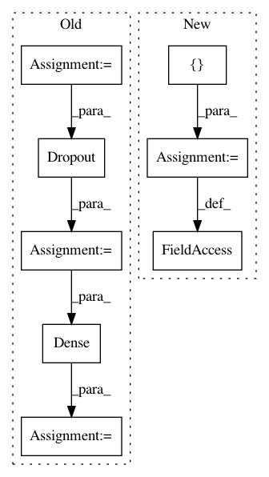

4b83c1070cebd0d996ba2cc69779dcb66d5d0032,autokeras/generator.py,DefaultClassifierGenerator,generate,#DefaultClassifierGenerator#Any#Any#,51
Before Change
for i in range(model_len):
output_tensor = BatchNormalization()(output_tensor)
output_tensor = Activation("relu")(output_tensor)
output_tensor = conv(model_width, kernel_size=self._get_shape(3), padding="same")(output_tensor)
output_tensor = Dropout(constant.CONV_DROPOUT_RATE)(output_tensor)
if (i + 1) % pooling_len == 0 and i != model_len - 1:
output_tensor = pool(padding="same")(output_tensor)
output_tensor = ave()(output_tensor)
output_tensor = Dense(self.n_classes, activation="softmax")(output_tensor)
return Model(inputs=input_tensor, outputs=output_tensor)
class RandomConvClassifierGenerator(ClassifierGenerator):
After Change
pooling_len = int(model_len / 4)
model = StubModel()
model.input_shape = self.input_shape
model.inputs = [0]
model.layers.append(StubInput())
for i in range(model_len):
model.layers += [StubBatchNormalization(),
StubActivation("relu"),
In pattern: SUPERPATTERN
Frequency: 3
Non-data size: 8
Instances
Project Name: keras-team/autokeras
Commit Name: 4b83c1070cebd0d996ba2cc69779dcb66d5d0032
Time: 2018-05-29
Author: jhfjhfj1@gmail.com
File Name: autokeras/generator.py
Class Name: DefaultClassifierGenerator
Method Name: generate
Project Name: keras-team/autokeras
Commit Name: 7f30b2403fadc4eaad48ceaf6154a626f477f8c8
Time: 2018-05-26
Author: jin@tamu.edu
File Name: autokeras/generator.py
Class Name: DefaultClassifierGenerator
Method Name: generate
Project Name: tensorlayer/tensorlayer
Commit Name: d72cd19198775068a1f26384146f19498554499f
Time: 2019-01-26
Author: zhangjqsmiling@gmail.com
File Name: examples/basic_tutorials/4_mnist_mlp_eager_mode_dynamic_reuse_model.py
Class Name: CustomModelHidden
Method Name: __init__